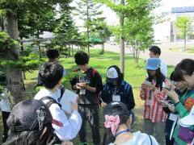
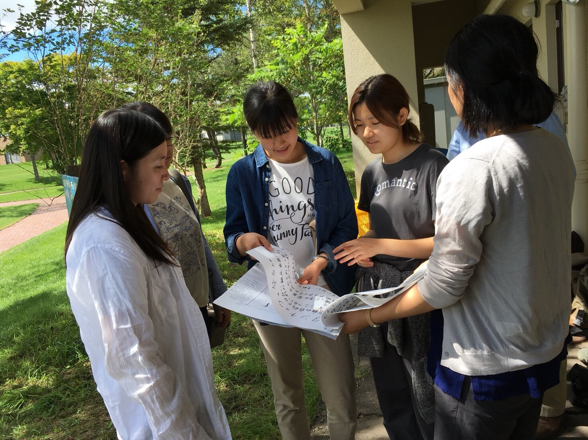

人物像
- 週末に札幌近郊の四季を望める名所で、カメラで写真を撮ることが趣味
経歴
-
1998年9月
北海道釧路市出身
幼少期、兵庫県西宮市で過ごす
小2から高3まで、北海道釧路市で過ごす
外遊びが好きで、釧路湿原こどもレンジャーに所属習い事
・新体操
・バトン
・ピアノ部活
・吹奏楽部
・科学部
・弓道部 -
2014年4月
釧路湖陵高等学校 普通科に入学
高1の時、SSH指定校カナダ・ブリティッシュコロンビア森林研修に参加

資格は、英検準2級を取得 -
2017年4月
日本大学生物資源科学部生物環境工学科に進学
測量学、施設工学といった土木建築分野から水文学、生態学といった自然科学分野まで幅広く環境に関して学習
地球環境・リモートセンシング研究室に所属し、「モンゴルの耕作地2種の土壌劣化評価」として卒論執筆
資格
・自動車免許第一種
・自然再生医初級
・生物分類技能検定4級バイト
・水族館のショー案内
・塾講師
・植生調査の補助サークル
・写真研究部
・動植物研究会ボランティア
Field Assistant Network
 -
2021年4月
鳥取大学大学院持続性社会創成科学研究科国際乾燥地科学専攻に進学
乾燥地に生息する自然生態系や、諸問題に対する取り組み等を学習
「海浜植生4種のCO2交換特性」として修論執筆 -
2023年4月
トランス・コスモス株式会社に入社
BPOサービス統括UES総括USS本部インフラサービス部に配属
2024年4月に退社 -
2024年7月
現在は、プログラミングの職業訓練校に通所